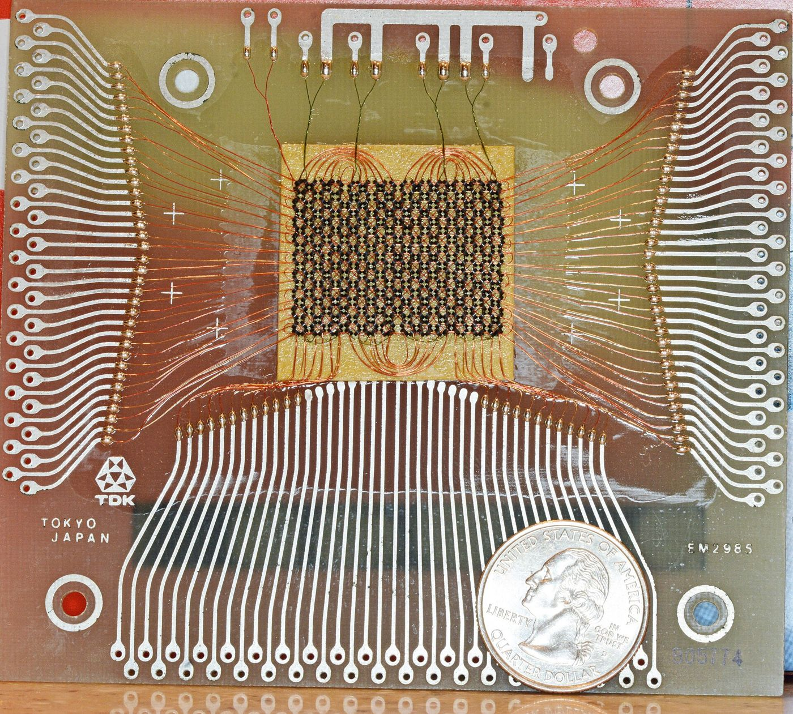

Por que a troca não funciona
O desafio da aula: escrever uma função trocar que receba valor1 e valor2 e troque o conteúdo dos dois. A primeira tentativa costuma ser esta:
void trocar(int x, int y) {
int temp = x;
x = y;
y = temp;
}
int main() {
int valor1 = 10, valor2 = 20;
trocar(valor1, valor2);
printf("%d %d\n", valor1, valor2);
return 0;
}10 20
Nada mudou. A função recebeu cópias: x e y são variáveis novas, locais de trocar, que nascem com os valores de valor1 e valor2. A troca acontece nas cópias e some quando a função termina.
Para a troca chegar na main, a função precisa saber onde valor1 e valor2 estão. Quem guarda esse “onde” é o ponteiro.
O que é um ponteiro
Toda variável ocupa uma posição da memória RAM, e toda posição tem um endereço. Uma variável comum guarda um valor; um ponteiro é uma variável cujo valor é o endereço de outra variável.

- Um nome de variável referencia um valor diretamente; um ponteiro referencia um valor indiretamente.
- O ponteiro também é uma variável, então ele tem o seu próprio endereço (
&p1). - Ponteiros são a base da passagem por referência, da alocação dinâmica (A9) e das listas ligadas (A12).
Declarar um ponteiro
A sintaxe é tipo *nome;. O * na declaração diz “isto é um ponteiro”, e o tipo diz para que tipo de dado ele aponta.
int *p; /* p é um ponteiro para int */
float *q; /* q aponta para um float */
double *r; /* r aponta para um double */
char *s; /* s aponta para um char */Lê-se “p é um ponteiro para int” ou “p aponta para um objeto do tipo int”.
int *a, *b, c; só a e b são ponteiros. c é um int comum, porque não tem *.Os operadores & e *
Dois operadores fazem todo o trabalho:
| Operador | Em uma expressão significa | Exemplo |
|---|---|---|
& | o endereço de uma variável | p = &y; |
* | o conteúdo do endereço guardado no ponteiro | printf("%d", *p); |
Exemplo 1: ler pelo ponteiro
int *p;
int n = 10;
p = &n;
printf("%d", *p);10
Exemplo 2: escrever pelo ponteiro
int b, *c;
b = 10;
c = &b;
*c = 11;
printf("%d", b);11
A linha *c = 11; grava 11 no endereço que c guarda, que é o de b. Por isso b mudou sem aparecer do lado esquerdo.
Exemplo 3: dois ponteiros
int a = 3, b = 2;
int *p, *q;
p = &a;
q = p; /* q recebe o mesmo endereço: também aponta para a */
*q = *q + 1; /* a passa a valer 4 */
q = &b; /* agora q aponta para b */
b = b + 1; /* b passa a valer 3 */
printf("%d, %d\n", *q, *p);3, 4
Atribuições válidas e inválidas
Com int i, j; float x, y; int *p, *q; float *r, *s;:
p = &i;,r = &x;,j = *p;,*r = y;,q = p;,s = r;,*q = *p + j;: válidas, os tipos combinam.p = &x;er = &i;: inválidas. Um ponteiro paraintnão pode guardar o endereço de umfloat, nem o contrário.
Inicialização e NULL
Um ponteiro deve receber um endereço antes de ser usado. Declarar não basta: sem inicialização ele guarda lixo, e *c = 13; grava 13 num lugar qualquer da memória.
int a, b, *c;
b = 10;
c = &a; /* sem esta linha, *c = 13 escreveria em um endereço desconhecido */
*c = 13; /* agora 13 vai para a */Quando o ponteiro ainda não aponta para nada válido, atribua NULL (definido como zero em stdio.h e stdlib.h) e compare antes de usar:
int numero, *pont = NULL;
scanf("%d", &numero);
if (numero > 0)
pont = №
if (pont != NULL)
printf("Numero: %d\n", *pont);
else
printf("Erro: ponteiro nulo.\n");a = b * c; multiplica por um endereço quando c é ponteiro; o certo é a = b * (*c);. E os tipos precisam combinar: int *c não pode receber &a se a for double. Não ter recebido valor também não faz o ponteiro valer NULL.Passagem por valor e por referência
Em C há duas formas de entregar dados a uma função.
Por valor
O valor do argumento é copiado para o parâmetro, como numa atribuição. Mudar o parâmetro não muda a variável da chamada.
void nao_troca(int a, int b) {
int aux = a;
a = b;
b = aux;
}
int main() {
int x = 4, y = 5;
nao_troca(x, y);
printf("x = %d, y = %d\n", x, y);
}x = 4, y = 5
Por referência
A chamada envia o endereço (&x), a função recebe um ponteiro e usa * para mexer no valor original.
void troca(int *a, int *b) {
int aux = *a;
*a = *b;
*b = aux;
}
int main() {
int x = 4, y = 5;
troca(&x, &y);
printf("x = %d, y = %d\n", x, y);
}x = 5, y = 4
&variável envia o endereço · o parâmetro int *p recebe o endereço · *p lê ou altera o valor naquele endereço.Use referência quando a função precisa alterar variáveis de quem chamou, devolver mais de um resultado (quociente e resto, maior e menor) ou evitar copiar dados grandes. Para uma conta simples com um único resultado, o return continua sendo o caminho natural.
Vetores e ponteiros
int vet[5]; reserva 5 inteiros contíguos (20 bytes, se cada int ocupa 4). O nome do vetor, numa expressão, vira o endereço do primeiro elemento: vet e &vet[0] têm o mesmo valor. Por isso o nome do vetor funciona como um ponteiro constante.
void zerar_vetor(int *vet, int tam) { /* igual a: int vet[] */
int i;
for (i = 0; i < tam; i++)
vet[i] = 0;
}
int main() {
int vetor[] = {1, 2, 3, 4, 5};
zerar_vetor(vetor, 5); /* igual a: zerar_vetor(&vetor[0], 5) */
return 0;
}
É por isso que uma função consegue alterar um vetor recebido: ela recebe o endereço do início, não uma cópia dos elementos. O mesmo vale para strings (char *str).
Funções que devolvem vários resultados recebem ponteiros extras, como no protótipo da lista: void contar(int *vet, int N, int *pares, int *impares);
Aritmética de ponteiros
Somar 1 a um ponteiro avança um elemento, não um byte. O deslocamento depende do tamanho do tipo apontado.
- Se
péint *e vale 1000,p++fazpvaler 1004. *(p + i)é o mesmo quep[i]e o mesmo quevet[i]quandop = vet.p + ié o mesmo que&vet[i].- Para
double(8 bytes),p + 1avança 8; parachar, avança 1.
int vet[5] = {7, 3, 9, 1, 5};
int *p = vet;
for (int i = 0; i < 5; i++)
printf("%d ", *(p + i) * 2);14 6 18 2 10

Endereços impressos com %p mudam de computador para computador e a cada execução; o que não muda é a distância entre eles.